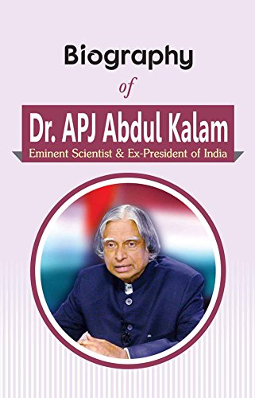

Dr. Abdul Kalam

Dr.Avul Pakir Jainulabdeen Abdul Kalam
Dr. Kalam was an Indian aerospace scientist and politician who served as the 11th President of India.
Early life and education
Avul Pakir Jainulabdeen Abdul Kalam was born on 15 October 1931 to a Tamil Muslim family in the pilgrimage centre of Rameswaram on Pamban Island, then in the Madras Presidency and now in the State of Tamil Nadu. His father Jainulabdeen was a boat owner and imam of a local mosque;[9] his mother Ashiamma was a housewife.[10][11][12][13] His father owned a ferry that took Hindu pilgrims back and forth between Rameswaram and the now uninhabited Dhanushkodi.[14][15] Kalam was the youngest of four brothers and one sister in his family.[16][17][18] His ancestors had been wealthy traders and landowners, with numerous properties and large tracts of land. Their business had involved trading groceries between the mainland and the island and to and from Sri Lanka, as well as ferrying pilgrims between the mainland and Pamban. As a result, the family acquired the title of "Mara Kalam Iyakkivar" (wooden boat steerers), which over the years became shortened to "Marakier." With the opening of the Pamban Bridge to the mainland in 1914, however, the businesses failed and the family fortune and properties were lost over time, apart from the ancestral home.[19] By his early childhood, Kalam's family had become poor; at an early age, he sold newspapers to supplement his family's income
Here's Some awards and honours of Dr. Kalam's life
- Kalam received 7 honorary doctorates from 40 universities.
- 1991-The Government of India honoured him with the Padma Bhushan
- 1990-The Government of India honoured him with the Padma Vibhushan for his work with ISRO and DRDO
- 1997- Dr.Kalam received India's highest civilian honour, the Bharat Ratna, for his contribution to the scientific research and modernisation of defence technology in India
- 1999-Dr.Kalam set a target of interacting with 100,000 students during the two years after his resignation
- 2012-Dr. Kalam was ranked number 2 in Outlook India's poll of the Greatest Indian.
- 2013-Dr.Kalam was the recipient of the Von Braun Award from the National Space Society
- 2014-Dr. Kalam recived degree in doctor of science Edinburgh University,
- 2019 Construction of Dr. A.P.J Abdul Kalam Science City started in Patna in February

Most inspiring quotes by 'Missile Man'
- Don’t take rest after your first victory because if you fail in second, more lips are waiting to say that your first victory was just luck
- Dream, dream, dream. Dreams transform into thoughts and thoughts result in action.
- To succeed in your mission, you must have single-minded devotion to your goal.
- If you fail, never give up because FAIL means "First Attempt In Learning.
- Creativity is seeing the same thing but thinking differently
- All of us do not have equal talent. But , all of us have an equal opportunity to develop our talents

Biographies of Dr. Abdul Kalam
- Eternal Quest: Life and Times of Dr Kalam by S Chandra; Pentagon Publishers, 2002.
- President A P J Abdul Kalam by R K Pruthi; Anmol Publications, 2002./li>
- A P J Abdul Kalam: The Visionary of India by K Bhushan, G Katyal; A P H Pub Corp, 2002.
- A Little Dream (documentary film) by P. Dhanapal; Minveli Media Works Private Limited, 2008.
- The Kalam Effect: My Years with the President by P M Nair; Harper Collins, 2008.The Kalam Effect: My Years with the President by P M Nair; Harper Collins, 2008.
- My Days With Mahatma Abdul Kalam by Fr A K George; Novel Corporation, 2009.
- A.P.J. Abdul Kalam: A Life by Arun Tiwari; Haper Collins, 2015.
- The People's Presidhe ent: Dr A P J Abdul Kalam by S M Khan; Bloomsbury Publishing, 2016
The People's President: Dr A P J Abdul Kalam by S M Khan; Bloomsbury Publishing, 2016
Don’t take rest after your first victory because if you fail in second, more lips are waiting to say that your first victory was just luck